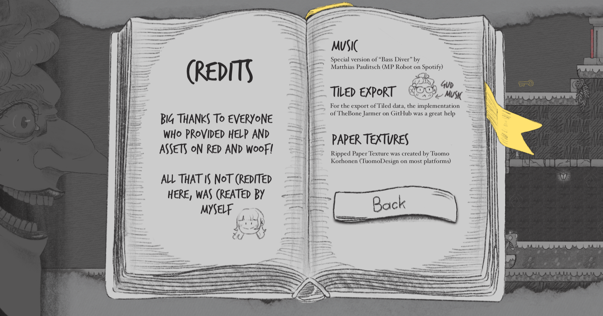
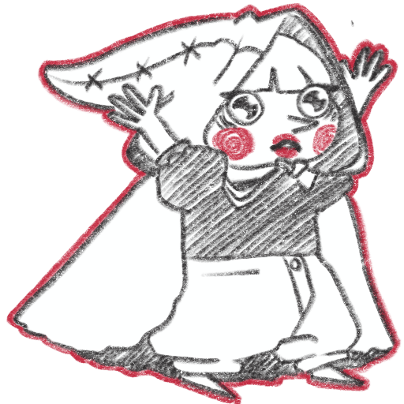
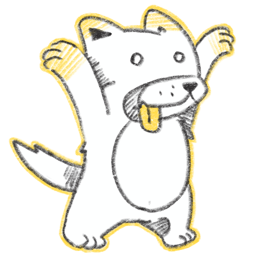
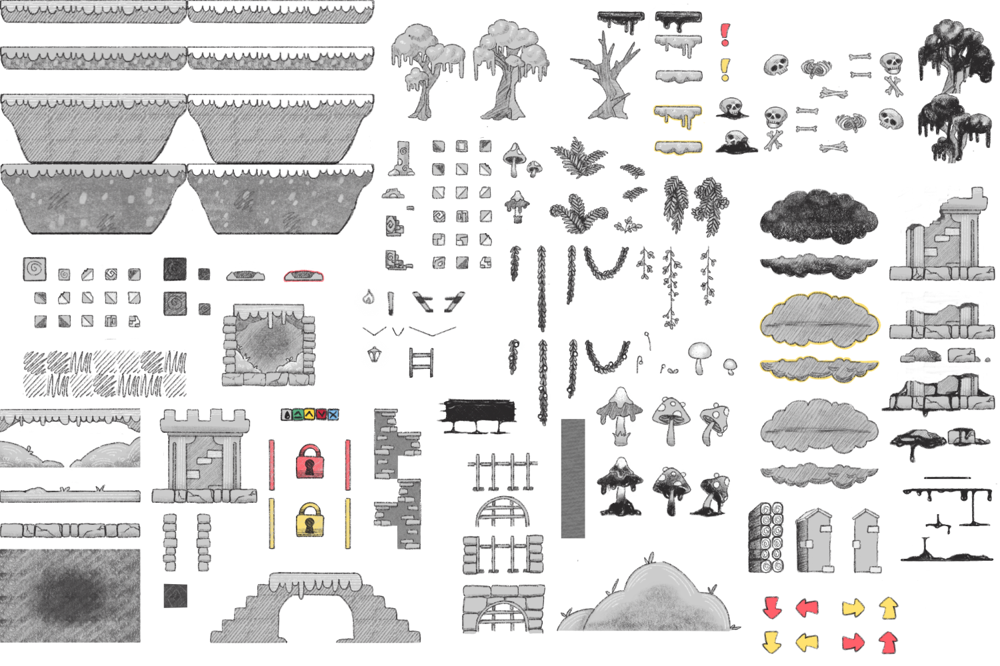
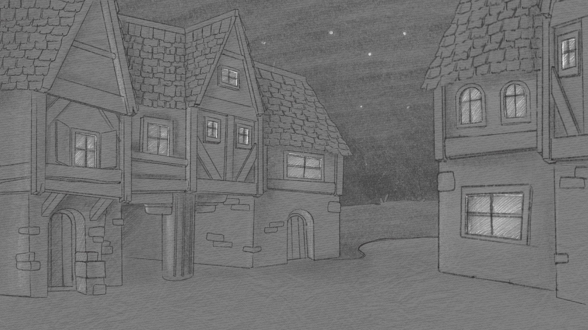
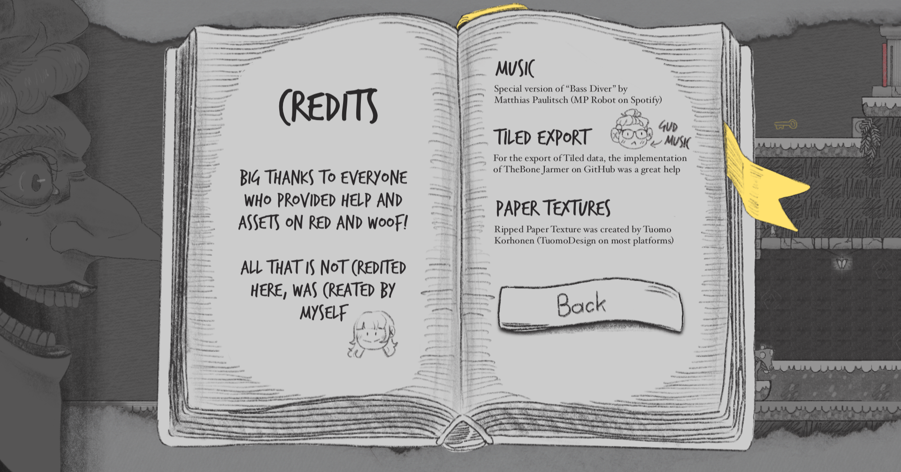
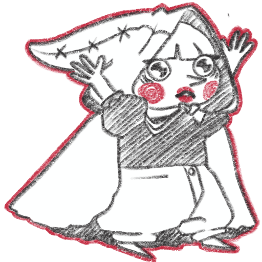
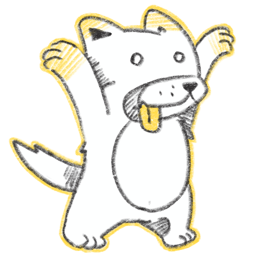
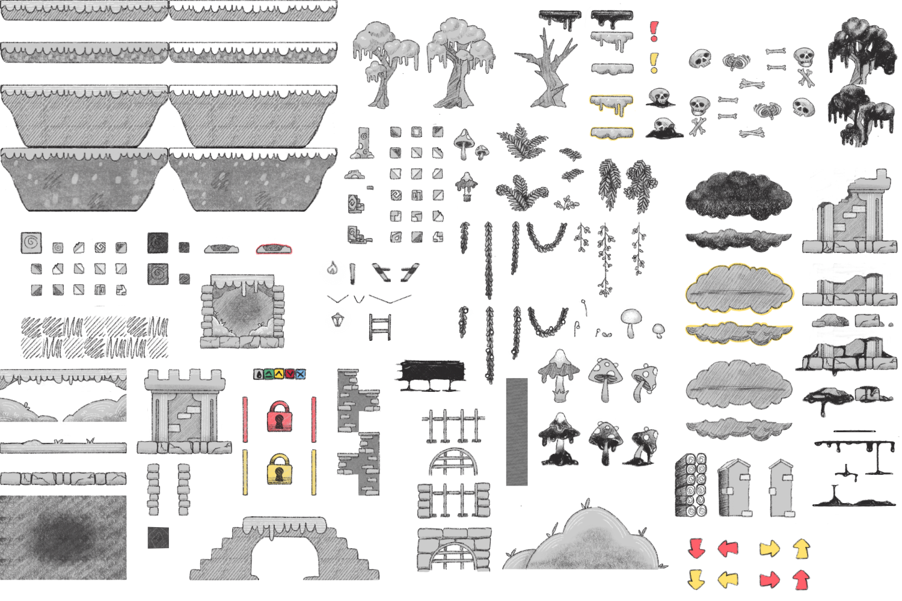
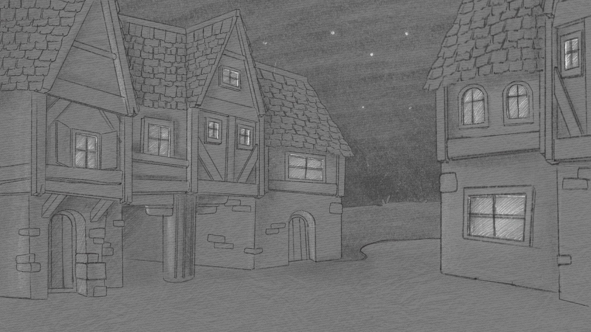

Red and Woof is a local multiplayer puzzle platformer for 2 players on a single keyboard. Players, Red Riding Hood and the Wolf, work together to find keys in the game to unlock doors and progress, all the while avoiding being caught by the approaching Grandma.
For my final project in the second semester, I created a basic game engine using the SFML-C# library. Buzzwords aside, this game was a solo effort - I designed and programmed everything myself, with the exception of the fantastic music, which was provided by MP Robot.
Read MoreFor this storybook-inspired setting, I aimed for a hand-drawn, pencil-style aesthetic that would convey a cute yet slightly spooky atmosphere.
Read MoreYou can download *Red and Woof* from itch.io.
 









 Antonia Pecha
Antonia Pecha